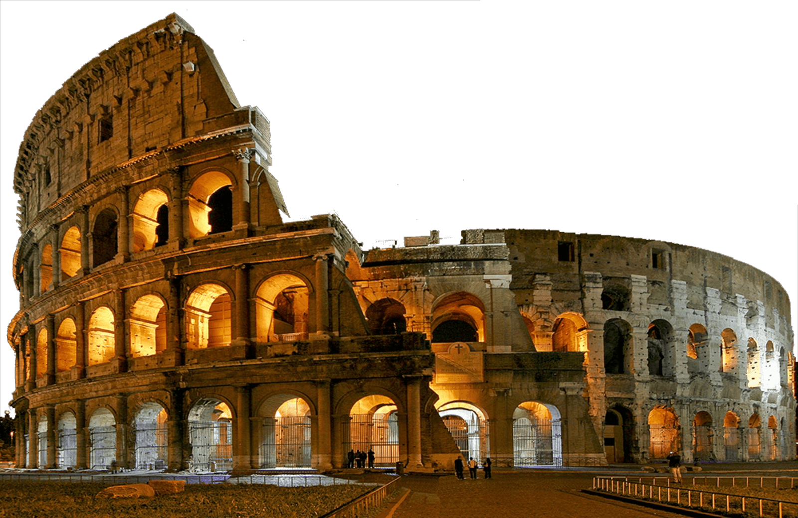

Travel In ROMA

COLOSEO Click To See Full Info
The Colosseum (/ˌkɒləˈsiːəm/ KOL-ə-SEE-əm; Italian: Colosseo [kolosˈsɛːo]) is an elliptical amphitheatre in the centre of the city of Rome, Italy, just east of the Roman Forum. It is the largest ancient amphitheatre ever built, and is still the largest standing amphitheatre in the world, despite its age. Construction began under the Emperor Vespasian (r. 69–79 AD) in 72[1] and was completed in AD 80 under his successor and heir, Titus (r. 79–81).[2] Further modifications were made during the reign of Domitian (r. 81–96).[3] The three emperors who were patrons of the work are known as the Flavian dynasty, and the amphitheatre was named the Flavian Amphitheatre (Latin: Amphitheatrum Flavium; Italian: Anfiteatro Flavio [aɱfiteˈaːtro ˈflaːvjo]) by later classicists and archaeologists for its association with their family name (Flavius).
.jpeg) Trevi Fountain Click To See More Info
Trevi Fountain Click To See More Info
The Trevi Fountain (Italian: Fontana di Trevi) is an 18th-century fountain in the Trevi district in Rome, Italy, designed by Italian architect Nicola Salvi and completed by Giuseppe Pannini in 1762[1] and several others. Standing 26.3 metres (86 ft) high and 49.15 metres (161.3 ft) wide,[2] it is the largest Baroque fountain in the city and one of the most famous fountains in the world.
.jpeg) Spanish Steps Click To See More Info
Spanish Steps Click To See More Info
The Spanish Steps (Italian: Scalinata di Trinità dei Monti) in Rome, Italy, climb a steep slope between Piazza di Spagna at the base and Piazza Trinità dei Monti, dominated by the Trinità dei Monti church, at the top.
The monumental stairway of 135 steps[1] is linked with the Trinità dei Monti church, under the patronage of the Bourbon kings of France, at the top of the steps and the Spanish Embassy to the Holy See in the Palazzo Monaldeschi at the bottom of the steps. The stairway was designed by the architects Francesco de Sanctis and Alessandro Specchi.